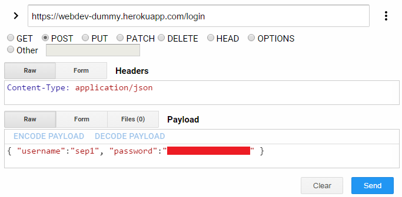

The "dummy" server is a "persistence-less" back-end server for your use while developing your front-end web application. Later you will develop your own back-end server and connect your front-end web app to it.
The server uses simple password authentication and registers a cookie in the browser after a successful login. Cookie management is handled entirely by the server and browser, no front-end logic is required.
There are three access mechanisms to use the dummy server
curlBefore you start implementing your front-end connection, try using curl to connect to the server. In particular, let's change our status headline. We'll start by getting the current status
curl https://webdev-dummy.herokuapp.com/status
Ah ha! We need to login first!
curl -H 'Content-Type: application/json' https://webdev-dummy.herokuapp.com/login \
-d '{"username":"netid", "password":"three-word-passphrase"}' -i
(I've added a new line and \ for display purposes, you do not need the \ or the new line.)
This performs a POST (the data flag makes it a post by default) to the /login endpoint. The payload is JSON, we inform the server it's JSON with the content-type header. Be sure to pass properly formed JSON, this means keys are quoted. The -i flag shows us the response headers. If successful, we should see two Set-Cookie statements in the header. We now pass those two authentication cookies when communicating with the server:
curl -H 'Content-Type: application/json' --cookie 'sessionId=12345; hash=222333444' \
https://webdev-dummy.herokuapp.com/status
You should get back your current status headline from this GET request. Now we change it:
curl -H 'Content-Type: application/json' --cookie 'sessionId=12345; hash=222333444' \
https://webdev-dummy.herokuapp.com/status -X PUT -d '{ "status":"A new headline!" }'
Status updating is an atomic action. Therefore we use the PUT verb instead of the default POST. Notice that we again pass JSON as the payload (the -d flag). The server should respond with the updated status message. We can then reverify by the previous GET request.
Using a browser based rest client allows for a lot of ease in debugging processes. I recommend you adopt either the Advanced REST Client or Postman Chrome extension for use when verifying communicataion with the server. In particular, you'll likely run into issues where your payload as produced from your front-end webapp is not correct. Use the browser based REST client to verify what your payload should be and what the response is.
Similar to the command line interaction, you will first need to login to the server. This returns a cookie. Using cookies in a browser based REST client is non-trivial. Instead, I permit the cookie to be passed as an authorization header. Below I use Advanced REST Client. First we login to the server with our netid and three-word-passphrase
Look for the cookies in the response

Send these cookies on all future requests. For example, here's changing the status headline

| endpoint | verb | payload | response | description |
|---|---|---|---|---|
| /sample | GET | none | [ { id: 1, author: Scott, ... }, { ... } ] | Array of sample posts. |
| /login | POST | {username: username, password: password } | { username: :user, result: "success"} | log in to server, sets session id and hash cookies |
| /logout | PUT | none | OK | log out of server, clears session id |
| /register | POST | { username: username, email: email, zipcode: zipcode, password: password} | { result: 'success', username: username} | Register a new user with the system. This is not functional, new users cannot log in. |
| /posts/:id*? | GET | If specificed, :id is a postId or username | { posts: [ { id: 1, author: Scott, ... }, { ... } ] } | A requested post, all requested posts by a user, or array of posts in the loggedInUser's feed |
| /posts/:id | PUT | :id is a post id { body: message, commentId: optional } |
{ posts: [{ id: 1, author: Scott, ..., comments: [ ... ] }] | Update the post :id with a new body if commentId is not supplied. Forbidden if the user does not own the post. If commentId is supplied, then update the requested comment on the post, if owned. If commentId is -1, then a new comment is posted with the body message. |
| /post | POST | { body: message, img: <file> } img is optional | { posts: [{ id: 1, author: Scott, ..., comments: [] } ]} | Add a new post for the loggedInUser, date and id are determined by server. Optional image upload -- see below. |
| /statuses/:users | GET | none :users is a comma separated list of user names |
{ statuses: [ {username:Scott, status:Happy}, { ... } ] } | Get the statuses for multiple users |
| /status | GET | none |
{ statuses: [{username:Scott, status:Happy}]} | Get the status for the loggedInUser |
| /status | PUT | { status: Happy } | { statuses: [{username: Scott, status: Happy }]} | Update the status for the loggedInUser |
| /following/:user | GET | :user is an optional user id. Defaults to loggedInUser | { username: :user, following: [ userids ]} | get the list of users being followed by the requested user |
| /following/:user | PUT | :user is a user id. | { username: :user, following: [ userids ]} | add :user to the following list for the loggedInUser |
| /following/:user | DELETE | :user is a user id. | { username: :user, following: [ userids ]} | remove :user to the following list for the loggedInUser |
| /email/:user | GET | :user is a user id | { username: :user, email: emailAddress } | get the email address for the requested user |
| PUT | { email: newEmailAddress } | { username: loggedInUser, email: newEmailAddress } | update the email addres for the loggedInUser | |
| /zipcode/:user | GET | :user is a user id | { username: :user, zipcode: emailAddress } | get the zipcode for the requested user |
| /zipcode | PUT | { zipcode: newZipCode } | { username: loggedInUser, zipcode: newZipCode } | update the zipcode for the loggedInUser |
| /pictures/:user | GET | :user is a user id, or comma separated list of user ids | [{ username: :user, picture: pictureURL }, { ... } ] | get the picture address for the requested user(s) |
| /picture | PUT | { img: <file> } | { username: loggedInUser, picture: pictureURL } | Update the picture address for the loggedInUser. See below |
| /password | PUT | { password: newPassword } | { username: loggedInUser, status: 'will not change' } | would update the password for the loggedInUser. But instead just gives message that password will not change. I.e., you can't change your password, sorry. |
To upload a picture we first need to have the user select a file. For example we could have a file input on our page:
<input type="file" accept="image/*"
onchange="angular.element(this).scope().vm.setFile(this)" >
Note that the file input doesn't play well with Angular. So we include an onchange directive to execute the setFile() method of our controller. That method takes in the element. Look at the member variables of that element, you'll find the file there.
In fact it's a complete file object with size and other useful information.
Now we need to do the upload. We're using $resource and need to make a small modification for the uploading of the file. The server expects json, so we need to make our request with a different content-type. In fact, we want it to be auto generated based on the payload. In our api declaration have this:
$resource(...
upload: {
method: 'POST',
headers: { 'Content-Type': undefined },
transformRequest: resourceUploadFile,
params: { ... }
}
})
What does this do? This sets the header to be automatically
determined by the payload. The transformRequest does some processing for us. When we call api.upload() we will supply it with our payload. Perhaps that looks like:
api.upload({ body: postBody, img: postImage })
See we'll be using the same "style" of upload for both the picture (avatar) upload as well as the post upload. In one case body is empty. We transform this json into form data to send to the server.
function resourceUploadFile(data) {
var fd = new FormData()
fd.append('image', data.img)
fd.append('body', data.body)
return fd;
}
The keys in the form data are very important: they are what the sever is looking for. So whereas you can change the names "data.img" and "data.body" you need the form to have "image" and "body" in order for your post or for your avatar upload to succeed. You'll get an error message from the server otherwise.
With this you should be able to upload your avatar images and make posts with imbedded images